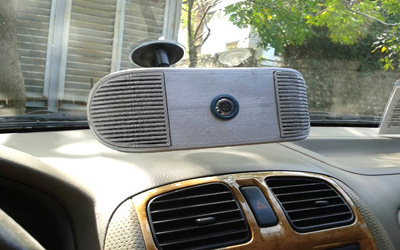
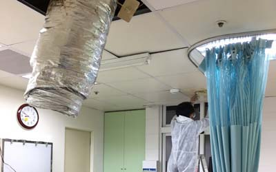
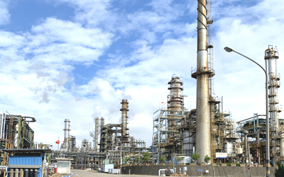

空氣品質改善方法
清淨技術


基本觀念
1.建材使用環保無害之建材或塗料、黏合劑...等
2.空調裝置vm 過濾；空調引入外氣換氣(並定期保養)
3.室內種植綠色植物，對淨化空氣有益處
4.開起窗戶或抽風機使室內產生對流(詳見美國空調學會，各作業及辦公區換氣之建議

裝潢後甲醛問題
如果室內有較多之裝潢，室內有機氣體會暫時因開了窗戶立刻減少，但得對流並在有大風狀況下，但只要關起窗戶1小時就立刻超標。
以甲醛而言需要數月至幾年後才會散發至安全值，一般以甲醛為主要處理之對象，其餘像甲苯、對二甲苯，只需開窗1-2天就可散發光，因此處理方法需看實際狀況，一般會使用甲殼素之類或活性碳吸附(立即短暫性-治標)，搭配光觸媒(常久性-治本)及其它物理方法來處理，加上強制換氣(開窗)可快速並持續的降低此問題。(請參考除甲醛方法)

新車除甲醛
新車在太陽下經過日曬，更會散發出各種化學物質，因此最好先將車內空氣流通一下，如果要使用空氣過濾機，需使用有活性碳及光觸媒的機種，可降低車內的有害氣體，另外由於長時間關閉窗戶更是導致了微生物菌的滋長，要定時開窗讓空氣流通交換，車廂是微生物菌最容易孳生的媒介，當車廂內微生物菌密度超過臨界點時，就會讓人感染獲病，適時之吸塵及清潔是必要的，車子之方向盤則為細菌滋生最多地方，是每週需要清潔之處。開車時養成先將車窗通風後3-5分後再將車窗關起，有益於各種化學物質之排出。

醫院商辦
多數辦公大樓及百貨公司都為中央空調系統，簡單的做法可在室內植栽一些綠色植物，但這只能解決極少的污染，百貨商場最多的污染物是以過多的二氧化碳，一般還是要靠空調系統，增加換氣量，但也因此會使得空調制冷的電力暴增，由其是在夏天的電費更可觀，另外因人潮製造之細菌也使得空氣不良，因此可適當在空調系統中增加除菌除有機物之裝制；而百貨公司之裝修所散發出環境賀爾蒙之污染物更需清除，二氧化碳部份只能從增加進排氣方式，或使用氧氣製造機增加含氧量。(請洽本公司專業人員)

工廠清淨
工廠以有機揮發物及粉塵最多，在噴漆工廠，粉塵多量處直接使用水霧及通風法或是電子集塵裝置是最快速的，但必需符合環保署空污法之規定，另外在室內可使用光觸媒除有機揮發物濾網，它的優點是只要使用光就可以除掉有機揮發物，是最經濟的方法，而理論上光觸媒濾網並不會有時間限制，只需將上面灰塵(影響光催化作用)沖洗掉及可重覆使用。
風管空調清潔消毒維護
完整的空氣調節系統包含了冷暖氣、除濕、過濾粉塵，稱HVAC，它的污染程度、使用年數與室內空間粉塵濃度成正比， 空調系統是維護IAQ之重要環節，空調系統之污染除了造成不健康與工作效率差外，亦會造成能源耗損且影響運轉效能，粉塵量之最多處為過濾網、送風口、外氣入口、送風口附近管路，即ACS(空氣輸送系統)，過濾器效果並非100%，故長期堆積造成了空調管路之風管內的污染。 以日本有JADCA(日本風管清潔協會)做為施做標準與規範，在臺灣尚無相關清潔規範，依據JADCA調查，當送風管底部塵埃量達每平方公尺5g時，送風口便會出現粉塵污染室內；而日本清洗標準為每平方米應小於1g以下，若依據日本之統計之風管內的塵埃堆積量做計算，定期實施風管清潔之時機約為竣工後的6.6年；而依據美國空調協會建議也在6年，如每年有定期保養，則可拉至10-15年間。